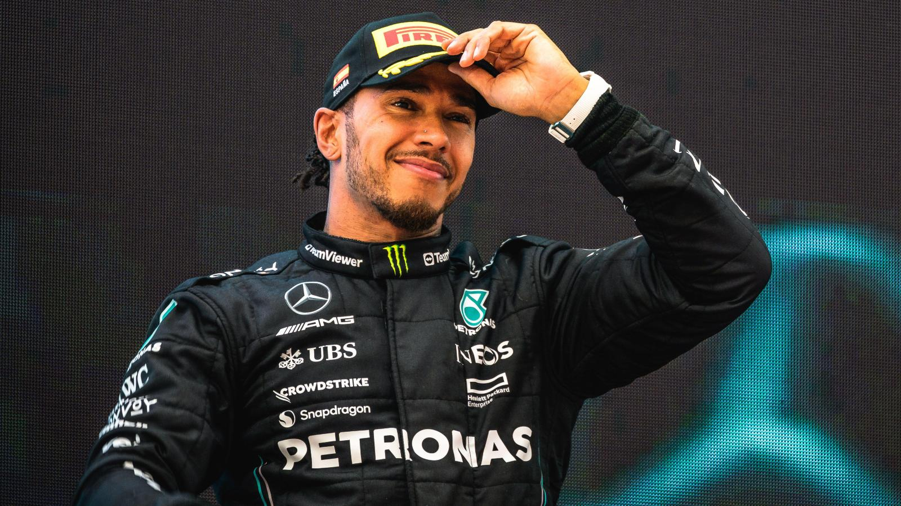
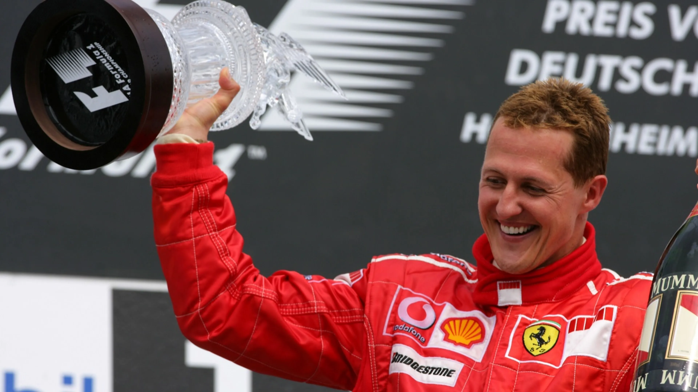
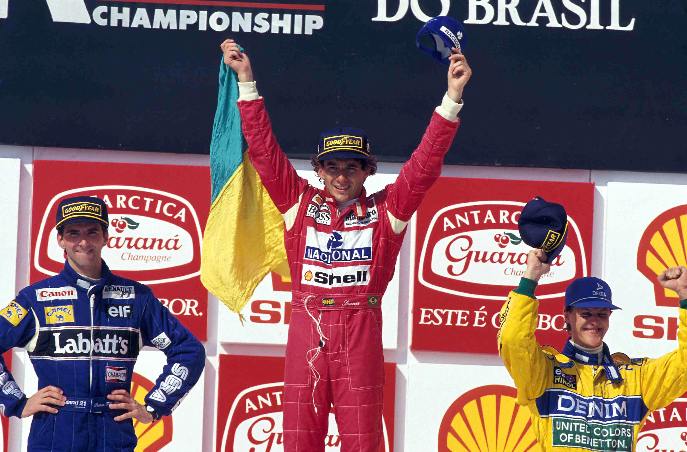

Lewis Hamilton
Lewis Carl Davidson Larbalestier Hamilton, es un piloto nacido en el año 1985 en Gran Bretaña que actualmente corre para la escudería
Mercedes AMG Petronas F1 Team y cuenta con 7 títulos mundiales.
Debutó en la temporada 2007 con el equipo Mclaren F1 Team donde en el año 2008 se convirtió
en aquel entonces en el piloto más jóven en la historia en ganar un título mundial.

Michael Schumacher
Michael Schumacher es un ex-piloto nacido en el año 1969 en Alemania considerado por muchos el GOAT (Greatest Of All Time).
Compitió desde la temporada 1991 hasta la temporada 2006, donde anunció su retiro. 4 años más tarde, volvería al circo de la F1
de la mano del equipo Mercedes donde competiría 2 años más hasta su retirada final. Es el piloto que más carreras y mundiales ha
ganado con la escudería Ferrari, rompiendo récords que no se superaban desde la década de los 50.
En el año 2013 sufrío un accidente esquiando en los Alpes que lo dejó en coma. Actualmente no sabemos su estado actual pero según filtraciones
de la prensa, se encuentra consciente pero con una incapacidad permanente. #KeepFightingMichael.

Ayrton Senna
Ayrton Senna da Silva fue un piloto nacido en el año 1960 en Brasil, apodado por su tierra natal "O rei". Considerado
el mejor piloto de la historia en pista mojada, era capaz de extraer el máximo del monoplaza en cualquier circustancia.
Ganó 3 títulos mundiales conviertiendose en el 3 piloto brasileño en alcarse con el títutlo.
Lamentablemente el 1 de mayo de 1994, perdió la vida en el circutio de Imola en San Marino en la curva de Tamburello mientras lideraba la carrera.
Su fallecimiento supuso un antes y un después en la seguridad de los monoplazas.

Fernando Alonso
Fernando Alonso Díaz es un piloto nacido en 1981 en Oviedo, España que actualmente corre para el equipo
Aston Martin Aramco Cognizant F1 Team. Alonso cuenta con apodos como "Magic" o "El Nano", es el piloto con más
experiencia en la historia de la Fórmula 1 y ha pilotado para más de 5 escuderías. No logró ser un 5 veces campeón del mundo
por tan solo 5 puntos.
Actualmente busca su victoria número 33 y el tercer mundial. Cabe recalcar su paso por otras categorías como
el mundial de resistencia (WEC), donde logró ganar el campeonato de resistencia en la temporada 2018-2019 resaltando las victorias en
las 24 horas de Le Mans y las 24 horas de Daytona.
También ha comeptido en el Dakar y en la prestigiosa carrea de la IndyCar, las 500 millas de Indianápolis.